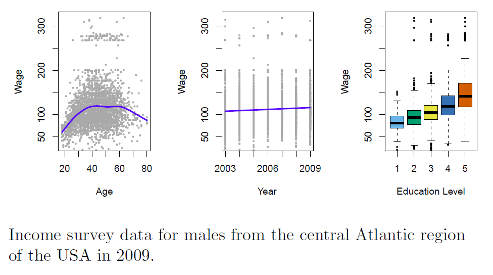

What is machine learning

This Venn diagram shows where machine learning falls in with other fields.
Machine learning (ML) is the scientific study of algorithms and statistical models that computer systems use to perform a specific task without using explicit instructions, relying on patterns and inference instead (wiki).
- Features that not noticeable by a human. With few instructions.
- Remember: machines do not know physical meaning, only numbers
Data Type
Continuous Data
- Data can be any value within a range
- E.g., a student’s height, a dog’s weight, an item’s price
- “Numbers” do not mean continuous data for sure.

Example:The relationship between data types and the values that represent them.
Discrete Data
- Data can be only from certain values.
- E.g. the results of rolling a dice (number) and number of students in a class (cannot be half a student)
Qualitative Data
- Descriptive information (words)
Quantitative Data
- Numerical information (numbers)
Examples
Predict Your Bank Account Balance

Email Spam Detection

Predict Wage

| Index | Prev | Next |